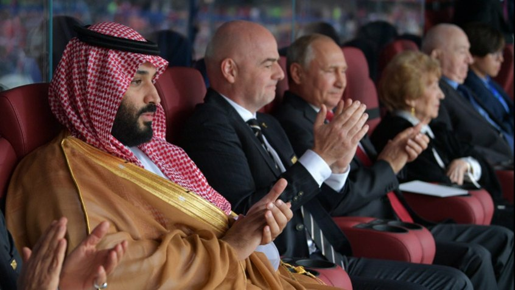

O bilionário comprou o Newcastle, da Inglaterra, na semana passada
O príncipe Mohammed Bin Salman comprou, no início deste mês, o Newcastle, da Inglaterra, por cerca de R$ 2,2 bilhões, o que tornou o clube em um dos mais ricos do mundo. Agora, segundo o veículo 'TycSports', ele mira o continente Sul-Americano e o Cruzeiro é o principal alvo do bilionário no Brasil.
Segundo o jornal espanhol 'As', o arábe mantém bons laços com o presidente Jair Bolsonaro, além de ter interesse em controlar clubes da América do Sul, cujo Brasil é o país com foco principal.
Ainda segundo o 'TycSports', o príncipe também mira clubes europeus como a Inter de Milão, da Itália, e o Olympique de Marselha, da França. Ambos enfrentam neste momento crises econômicas, assim como o Cruzeiro.